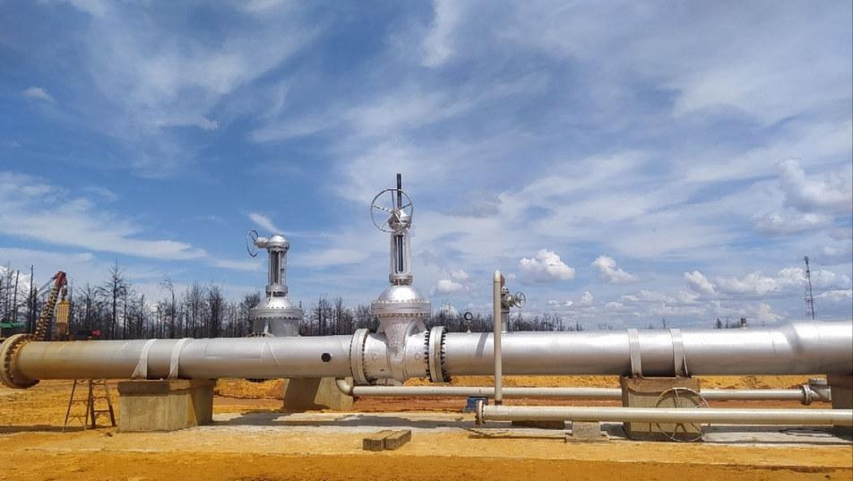
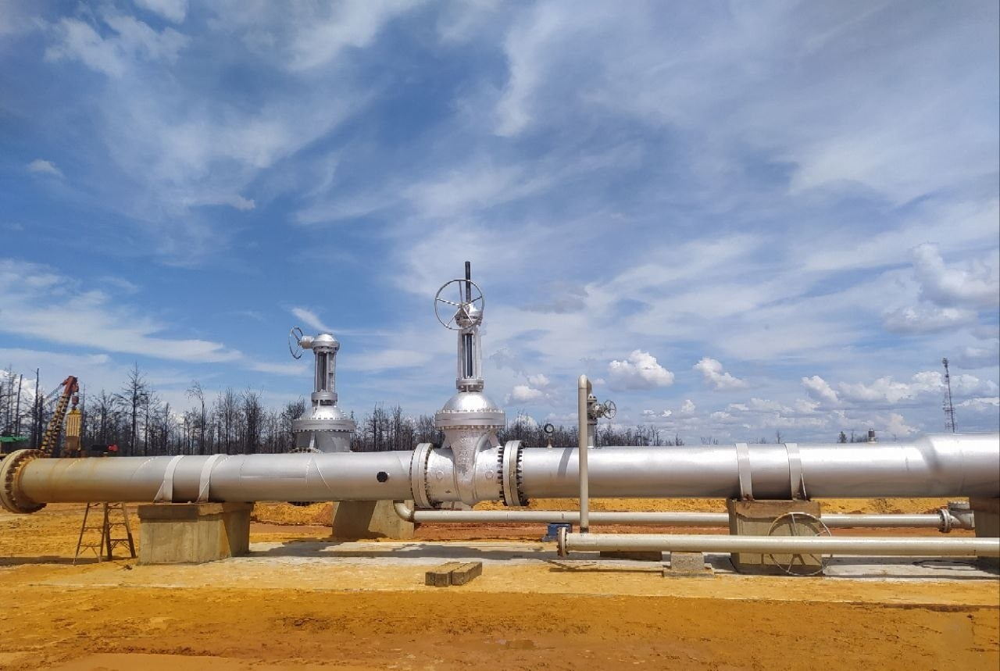

01
MISIÓN
Ser partícipes en el desarrollo del país a través de la elaboración de proyectos y la ejecución de obras civiles, mediante la implementación de los últimos avances e innovación en técnicas de ingeniería y procesos de construcción.
Desde 2017, sumamos 9 años de experiencia aportando soluciones integrales a la industria civil y petrolera del oriente del país. Nuestro compromiso se mide en resultados: obras entregadas con excelencia, operando siempre con flota propia y personal altamente calificado.



Ser partícipes en el desarrollo del país a través de la elaboración de proyectos y la ejecución de obras civiles, mediante la implementación de los últimos avances e innovación en técnicas de ingeniería y procesos de construcción.
Consolidarnos como referente nacional en la construcción de infraestructura civil y petrolera, manteniendo excelencia operativa y compromiso socioambiental.
Ser referentes en calidad, innovación y satisfacción del cliente durante la próxima década, impulsando la transformación del área de construcción civil y petrolera.


Construcción de las obras civiles, mecánicas, eléctricas e instrumentación del Oleoducto de 30″ × 17 km, desde la Planta Desaladora Deshidratadora PDD hasta el rebombeo El Aceital, Morichal, estado Monagas. Además de la aplicación y puesta en funcionamiento del sistema de protección catódica.


Completación mecánica de la tubería de 42″ desde el Patio de Tanques Oficina (PTO) hasta el Terminal de Almacenamiento y Embarque Jose (TAEJ), así como la construcción de 07 tanquillas de concreto en válvulas de retención de 42″.


Construcción del Oleoducto de 30″ × 14 km desde la Estación de Flujo (FF) hasta el Km 0, Petrolera Sinovensa, necesarios para incrementar la producción desde 105 MBPD hasta 330 MBPD de crudo extrapesado. Así como la instalación y puesta en marcha del sistema de protección catódica.


Construcción de 29,60 km de tubería de 12″ de inyección de agua salada desde COPEM Petromonagas hasta los pozos inyectores El Salto. Así como la instalación y puesta en marcha del sistema de protección catódica de tuberías enterradas.


Reemplazo del Tramo I del Oleoducto de 30″ × 5,9 km, a fin de garantizar la confiabilidad y continuidad operacional, así como la integridad mecánica del oleoducto de 30″, en el cumplimiento del transporte de Diluente Mesa 30 para la División Carabobo, Distrito Morichal y empresas mixtas, y la formulación de la segregación Merey 16.


Reemplazo de 10,5 km del Diluenducto de 20″ Palmichal – PTO, con perforación direccional bajo suelo en la Troncal 9 de la autopista Gran Mariscal de Ayacucho, con el propósito de restablecer la integridad del sistema de transporte e incrementar la presión de bombeo hasta 840 psi, permitiendo el manejo de nafta con un caudal promedio de 180 MBD de diluente.


Construcción de la vialidad de acceso y plataforma de perforación para la Macolla 15 del Centro Operativo Petromonagas, involucrando movimientos de tierra, conformación de taludes, construcción de 39 cellars y canales de drenaje perimetrales con pases reforzados.


Limpieza y mantenimiento de estaciones de válvulas en corredores de tuberías, cortafuegos perimetrales, señalización de áreas y pintura de puentes y estructuras metálicas.


Remoción, recolección y recuperación de crudo sobrenadante, así como la carga, transporte, tratamiento y disposición final del suelo contaminado en instalaciones de PDVSA autorizadas por el MINEC, generado en las actividades de saneamiento realizadas en el Centro Operativo de Morichal (COMOR), División Carabobo.


Saneamiento y posterior mantenimiento de las cuatro lagunas A, B, C y D del SIAE del Centro Operacional Morichal (COMOR), en la División Carabobo, a través del dragado de sólidos.


Movilización y trasegado de crudo en el Sistema de Inyección y Efluentes (SIAE) ubicado en las instalaciones del Centro Operativo COMOR, con equipos de vacío tipo vacuum de mínimo 160 BLS.


Operación de maquinaria pesada para realizar los trabajos de saneamiento de áreas afectadas por derrames de hidrocarburos: remoción, estabilización, homogeneización, apilamiento y tratamiento in situ del material impactado, contención y recolección de fluidos petrolizados, nivelación de terreno y carga de sólidos.


Servicio de movimientos relacionados con remoción de suelos, carga, descarga y traslado de materiales logísticos y misceláneos, contemplados en las operaciones de rehabilitación y reacondicionamiento de pozos, subestaciones eléctricas, estaciones de flujo y descarga, asociados a las labores operacionales de las divisiones pertenecientes a la Dirección Ejecutiva de Producción FPO.

Movilización de todos los materiales y equipos (transformadores, generadores, plantas), misceláneos y lubricantes, desde las instalaciones PDVSA a nivel nacional hasta las áreas operacionales de las divisiones Carabobo, Ayacucho, Junín y Boyacá, adscritas a la Dirección Adjunta de Logística perteneciente a la Dirección Ejecutiva de Producción FPO HC.


Reparación de bombas marca Bornemann, Warren, Sulzer y Flowserve, utilizadas para el transporte de fluidos en superficie y ubicadas en instalaciones pertenecientes a la Faja Petrolífera del Orinoco.


Servicios de maquinaria pesada para realizar actividades operacionales que contribuyan con la activación de pozos en la División Carabobo.


Construcción y mantenimiento de cortafuegos en corredores de tubería y líneas eléctricas de oleoductos y diluenductos de la Faja. Incluyendo corrección de filtraciones por soldadura y encapsulamiento de grampas apernadas.


Servicios para acondicionamiento y adecuación de vías de acceso y locaciones, los cuales son indispensables para el óptimo funcionamiento y operación de las unidades de producción de la División Carabobo.


Saneamiento y restauración de la Laguna de Curataquiche, progresiva 15+000 del Oleoducto de 36″, desarrollando actividades de remoción de capa de hidrocarburos con barreras oleofílicas y material particulado; estabilización mecánica, carga y transporte del material contaminado; reforestación del área, toma y análisis de muestras en la laguna, ejecutadas en las diferentes fases del proceso de saneamiento.


No subcontratamos maquinaria: cada equipo es nuestro, con mantenimiento y operadores de la casa. Eso nos permite montar un frente completo sin depender de terceros, y el parque no ha dejado de crecer.


Calle París entre New York y Caroní,
Edf. Pedreañera #177, Urb. Las Mercedes,
Municipio Baruta, Edo. Miranda — Caracas.
Lechería, estado Anzoátegui.
+58 212 994.1106 / 1253
+58 212 994.0987 / 0730
info@cvidalsa27.com